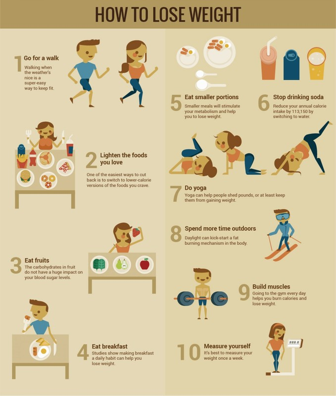

Plan Your Day to Lose Weight
- Plan Your Day to Lose Weight - WebMD
Easy little habits for sustainable weight-loss. Hey guys! I’ve just shared my daily weight-loss routine over on my YouTube channel for you. In this video, I’m sharing 7 little habits (that may sound like a lot, but you don’t have to do all of them) that can help you to get healthier, lose weight and get into better shape. - Weight loss daily routine lifestyle with apple ciders
Weight Loss Daily Routine You Must Try: 1. Drink Water In The Morning. It is important to keep your body dehydrated while trying to lose some weight. Every time you wake up in the morning, make a habit to drink a glass of plain water or lemon water. ... - Daily Exercise Routine For Weight Loss - AllYogaPositions ...
This 5-day workout routine for weight loss and muscle gain provides the building blocks to create your dream physique… but only if you support it with the right diet. For slow, steady and manageable weight loss you should shoot for a calorie intake that’s ~20% lower than maintenance. - Beginner Gym Workout Routine for Weight Loss - Greatest ...
All we have to do to make our daily activities such as these to induce weight loss into our system is to add a few things to them here and there. There is a fairly simple way to manipulate your routine to lose those extra calories. What follows is a systemic list of tweaks introduced throughout your day. Wake up time- 7 a.m.* - The 6-Week To Fat Loss Workouts | Muscle & Fitness
Additionally, remember that your weight may fluctuate daily and can be influenced by a variety of factors. Focus on the big picture and look for overall weight loss trends, rather than getting ... - 24 Hours of Weight Loss: The Daily Routine of Healthy People
A Year of Daily Weight Loss Motivational & Inspirational Quotes for Weight Loss. Here you’ll find more than a year’s worth of encouraging quotes to help you on your weight loss journey. Quotes about fitness, health, mindset, perseverance, success, positive thoughts and more. Weight Loss Motivational Quotes – January. January 1 - My Daily Weight-Loss Routine + Easy Ways to Lose Weight ...
Importance of Breakfast in Daily Routine Posted by weightlosssuper on September 22nd, 2020 08:15 AM It is good to recognize that morning meal is best for your overall wellness, which not only supplies energised begin to the day, however likewise boosts your psychological and physical health and wellness. - Good Daily Routine for Losing Weight | Live Healthy ...
Today I have a weight-loss routine that keeps me focused and makes healthy choices come naturally to me. I no longer have to think about it-it's just what I do. And it's all thanks to small weekly and daily changes that have transformed my world. Every Sunday, my family and I go shopping for organic veggies, fruit, and healthy proteins like ... - 10 Morning Habits That Help You Lose Weight
Daily Exercise Routine For Weight Loss THOUGHT EXERCISES I have found that the following thought experiments are wonderful tools that have played a pivotal role in shaping how I perceive and interact with the world. The goal of each of these exercises is two-fold. First, they help to understand and explain people, behaviors and their decision making. Second, they help me to explain and become ... - How to lose weight: Doctor shares daily dozen checklist ...
The best diet for weight loss is a whole-food, plant-based diet, says Dr. Michael Greger, author of “How Not to Diet." Here's his daily dozen food checklist.

Skip to main content Coronavirus Update Check Your Symptoms Find A Doctor Find A Dentist Connect to Care Find Lowest Drug Prices Health
A-Z Health A-Z Health A-Z Common Conditions ADD/ADHD Allergies Arthritis Cancer Coronavirus (COVID-19) Depression Diabetes Eye Health Heart Disease Lung Disease Orthopedics Pain Management Sexual Conditions Skin Problems Sleep Disorders View All Resources Symptom Checker WebMD Blogs Podcasts Newsletters Questions & Answers Insurance Guide Find a Doctor Children's Conditions A-Z Surgeries and Procedures A-Z Featured Topics Symptom Checker COVID-19: Check Your Symptoms Now Slideshow Get Help for Migraine Relief Drugs &
Supplements Drugs & Supplements Drugs & Supplements Find & Review Drugs Supplements Tools Manage Your Medications Pill Identifier Check for Interactions Drug Basics & Safety Commonly Abused Drugs Taking Meds When Pregnant Featured Topics Slideshow Vitamins You Need as You Age Slideshow Supplements for Better Digestion Living
Healthy Living Healthy Living Healthy Diet, Food & Fitness Diet & Weight Management Weight Loss & Obesity Food & Recipes Fitness & Exercise Beauty & Balance Healthy Beauty Health & Balance Sex & Relationships Oral Care Living Well Women's Health Men's Health Aging Well Healthy Sleep Healthy Teens Featured Topics Article Smart Grocery Shopping When You Have Diabetes Quiz Do You Know the Benefits of Walking? Family &
Pregnancy Family & Pregnancy Family & Pregnancy All About Pregnancy Getting Pregnant First Trimester Second Trimester Third Trimester View All Parenting Guide Newborn & Baby Children's Health Children's Vaccines Raising Fit Kids View All Pet Care Essentials Healthy Cats Healthy Dogs View All Featured Topics Slideshow Smart Snacks When You're Pregnant Slideshow Surprising Things You Didn't Know About Dogs and Cats News &
Experts News & Experts News & Experts Health News Get Coronavirus News & Updates Here COVID-19: Check Your Symptoms Now Coronavirus in Context: Interviews With Experts How Long Does Coronavirus Live On Surfaces? Social Distancing, Quarantine Explained Experts & Community WebMD Blogs News Center Featured Topics WebMD News Get the Latest COVID-19 News Here Newsletters Sign Up to Receive Our Free Coroanvirus Newsletter Mobile Apps Subscriptions Sign In Subscribe My Profile My Tools My WebMD Pages My Account Sign Out
Weight Loss & Obesity Home
News Reference Slideshows Quizzes Videos Questions & AnswersHealth & Diet Guide
Popular Diet Plans Healthy Weight Tools and Calculators Healthy Eating & Nutrition Best & Worst Choices All Guide TopicsWeight Loss & Obesity Center
What Is Obesity? Health Risks of Obesity 4 Types of Weight Loss Surgery Gastric Bypass Surgery Weight Loss Surgery: What to Expect Prescription Weight Loss DrugsRelated to Weight Loss & Obesity
Diet & Weight Management Fitness & Exercise Food & Recipes Food & Fitness Planner Diabetes Cholesterol Management More Related Topics Diet & Weight Management Weight Loss & Obesity Feature StoriesManaging High Potassium While on Dialysis
Plan Your Day to Lose Weight
Making lifestyle changes doesn't come naturally. To change your eating and exercise habits, you've got to plan - to make it happen.
By Jeanie Lerche Davis From the WebMD ArchivesYou're running late, flying out the door. You might skip breakfast : the cereal box is empty, and the milk's gone sour. Forget taking lunch: there's peanut butter in the jar, but you are out of bread. Exercise before work? You've got to be kidding. It's a typical hectic morning, at the beginning of a typical jam-packed day. What happened to those resolutions to exercise more, eat healthier, lose weight ? It's easy for them to get lost in the daily shuffle.
In a perfect world, we could accomplish all this by the time our busy day starts:
Jump out of bed by 6:30 (or earlier). Get a good chunk of exercise, 20 minutes or more. Eat a satisfying but healthy breakfast : fresh fruit, high-fiber cereal, low-fat milk. Brown-bag a wholesome lunch: more fresh fruit, low-fat yogurt, whole-wheat bread, homemade vegetable soup (maybe that you prepared last night).It's true -- with a little planning, this could be your reality. Your morning rush would go more smoothly, and your weight loss efforts would stay on track. You bounce out of bed, knowing what your next move is - all day, all week, all year.
"If you leave exercise and healthy eating to chance, it's not going to happen," says Milton Stokes, RD, MPH, chief dietitian for St. Barnabas Hospital in New York City. "You're responsible for you. Use your personal digital assistant to set your day - gym time, dinner. Make these things pre-meditated - so it's not like a surprise, you've got an extra hour, should you go to the gym or watch TV. If you don't plan it, you won't do it."
Planning for Weight Loss
Planning helps you build new habits, says Barbara J. Rolls, PhD, the Guthrie Chair in Nutrition at Pennsylvania State University in Pittsburgh and author of The Volumetrics Weight Control Plan . "Without planning, you're always going to be struggling - trying to figure out how to eat what you should. You'll end up making yourself eat things you don't want to eat. Eating will always feel like work."
Indeed, planning involves discipline - and that is a key trait that is evident among the "successful losers" who belong to The National Weight Control Registry. They have maintained a 30-pound weight loss for at least a year - and many have lost much more, and kept it off for much longer.
"It is very difficult to lose weight and keep it off - and people who succeed must have discipline," says James O. Hill, PhD, the Registry's co-founder and director of the Center for Human Nutrition at the University of Colorado Health Sciences Center. "People who are most successful plan their day to ensure that they stick to their eating plan and get regular physical activity. It takes effort to be successful in long-term weight management ."
Continued
Goal No. 1: Plan Your Daily Food
First, take note of every bite of food you have during the day. Don't forget that run through the supermarket - all those tasty samples you couldn't pass up. "A food journal is the single best thing you can do," says Gary Foster, PhD, clinical director of the weight and eating disorders program at the University of Pennsylvania School of Medicine. "You become more conscious of what you're doing. It helps you monitor yourself, and make corrections in mid-course."
Dietitians call it a food journal. But really, it's research for your plan of action, he explains. You'll see where you need improvement. "Plans work better than platitudes," Foster tells WebMD. "Instead of 'I'll exercise more,' make it 'I'll walk tomorrow morning at 7 a.m.'"
Keep it simple . Journals don't have to be labor-intensive, he says. Focus on your high-risk time slots when you're most likely to get off course. Example: You know you eat junk at night, or that you snack after 3 p.m., or between lunch and dinner. Just keep notes during that time period. You'll quickly see problem habits: banana split vs. banana, the whole container of nuts vs. a handful.
Set specific goals . You can't just tell yourself to eat less junk food after 8 p.m. Be specific - 'I'm going to substitute popcorn for potato chips.' That way you know exactly what to do. There's no question.
Use weekends wisely . "When things are a little quieter on weekends, you can think about the upcoming week," says Stokes. "Decide what you're going to eat. Go to the market, so you're a little ahead of the game. You can even prepare food on the weekend and freeze it, then pull it out during the week."
Consider your options . Keep lists of healthy foods and meals you love, and plan accordingly, adds Elisabetta Politi, RD, MPH, nutrition manager at the Duke Diet & Fitness Center at Duke University Medical School. "I advise people to think of five different breakfast, lunch, and dinner options. Then you'll have some freedom - you can choose from your favorites. But your eating will be more structured. That's what's important."
Continued
Shop wisely . A well-stocked fridge and pantry can make it easier to grab a healthy snack or prepare delicious meals that are also good for you. Keep basics like these on hand: low-fat milk and yogurt, eggs, peanut butter, a variety of fresh fruits (include berries and grapes) and vegetables (include carrots and celery), soybeans, garlic, whole grain pasta/bread, fish, and high-fiber cereal.
Plan healthy treats . Low-fat cheese or yogurt, hummus with veggies, and fresh fruit are great choices. Keep them at home; take them to the office. That will help you eat the right foods when you're starving - especially in the late afternoon, during drive time -- and when you finally get home at night.
Do it yourself . These are great prepare-ahead healthy meals that will keep you feeling full and help you control your weight:
Make a dried-fruit-and-nut mix for emergency snacking. (Be wary of granola, since it typically has lots of sugar, says Stokes.) Pack small amounts in a little plastic bag - great for the car or office. Cook a big pot of homemade vegetable soup, which can be frozen for several lunches or dinners. Try smoothies - blend low-fat yogurt and fruit - for a grab-and-go meal. Mix up big salads or a pasta primavera with lots of veggies and whole-wheat pasta. Prepare large quantities so you can have a moderate-sized helping for dinner and then have leftovers for lunch the next day.Buy healthy frozen entrees . "These have really improved," says Rolls. "They have more whole grains in them now, and they seem to be getting tastier. If I'm traveling and can't get to the grocery store, I make sure I have frozen entrees on hand."
Don't limit yourself . It's OK to eat breakfast food for snacks, lunch, or dinner. "You can eat a hard-boiled egg or cereal any time, not just breakfast," Stokes advises.
Goal No. 2: Plan Your Exercise
First, talk to your doctor - especially if you are overweight or are at high risk for heart disease , advises Thompson. Your doctor may suggest that you ask a fitness trainer to develop a workout plan that best suits your needs.
Continued
Analyze your morning schedule . "You'll find there's a lot of free time there," says Gerald Endress, ACSM, fitness director at Duke Diet & Fitness Center at Duke University Medical Center. "People tell me it takes them two hours to get ready for work. It's not that they're prettying themselves up - they're basically just wasting time. But when they start exercising in the morning, they find they use their time better. One guy told me he got to work 20 minutes earlier on days he exercised. If you've got a structured period of activity, you know to keep things moving."
Set your program . Decide what works best for you, such as 8 a.m. on Monday, Wednesday, and Friday. "You don't let anything interfere with that," advises Thompson. "That's not to say once a month something comes up you can't exercise. That's OK. It's when you're making excuses three, four, five days in a row -- that's a problem. It's got to be the highest priority because it's your health."
Know your options . What kind of exercise - or physical activity - will get you out of bed in the morning? A yoga video, walking, a workout session at the YMCA? Figure out what will motivate you.
Tackle roadblocks . Is inertia a problem for you in the morning? "When the alarm clock sounds, it's easy to hit the snooze button," says Bryant. A workout buddy can provide motivation. "If you know someone is waiting for you, counting on you, you'll go. Once you go, you're happy you went. Once you get past that inertia, you're glad you did the workout."
Don't think of it as "early" . It's a mindset issue, says Foster. Setting the alarm 30 minutes early should not be a negative in your day. Give it a positive spin. "Quit thinking of it as getting up early. Your day starts when the alarm goes off. That's how you should think of it."
Remind yourself . Put yellow sticky notes on the fridge or the computer - like "get off the bus four stops early - Mon., Wed., Fri."
Continued
Reward yourself . "Establish a goal for your workouts - daily, weekly, monthly goals," Bryant advises. "When you've done those workouts, accomplished those goals, pat yourself on the back." He suggests going out and buying a favorite DVD or CD, or even getting yourself that iPod you wanted! "Rewards help keep you motivated," says Foster.
"Planning helps you overcome the unpredictability of daily life," says Foster. "Having any plan, even if it's a bad or ineffective plan, increases your confidence in accomplishing the task at hand. Just the fact that you've thought it through means it will have some effect."
WebMD Feature Reviewed by Louise Chang, MD on September 1, 2010Sources
SOURCES: Milton Stokes, RD, MPH, spokesman, American Dietetic Association; chief dietitian, St. Barnabas Hospital, New York City. Barbara J. Rolls, PhD, Guthrie Chair in Nutrition, Pennsylvania State University, Pittsburgh. James O. Hill, PhD, co-founder, National Weight Control Registry; director, Center for Human Nutrition, University of Colorado Health Sciences Center. Gary Foster, PhD, clinical director, weight and eating disorders program, University of Pennsylvania School of Medicine. Elisabetta Politi, RD, MPH, nutrition manager, Duke Diet & Fitness Center, Duke University Medical School. Gerald Endress, ACSM, fitness director, Duke Diet & Fitness Center, Duke University Medical Center. WebMD Feature: "Healthy Refrigerator." WebMD Feature: "5 Foods That Fight Hunger Pains."
© 2005 WebMD, Inc. All rights reserved.Pagination
Top Picks
What to Expect From Weight Loss Surgery Health Risks of Obesity Prescription Weight Loss Drugs Is Weight Loss Surgery Right for You? Tips to Lose 100 Pounds or More Surprising Reasons You're Gaining Weightfurther reading
Slideshow: Bad Foods that Help You Lose Weight Slideshow: 10 Ways to Control Your Eating Vitamins: Separating Fact From Fiction Diet vs. Exercise: The Truth About Weight Loss Do Men Lose Weight Faster Than Women? GMOs: Food for Thought Brown Fat Revolution Diet Review Diet Research and Studies TopicsToday on WebMD
Fat Facts
Test your knowledge of different types.
Prescription Weight Loss Drugs
What to know before taking them.
Happy Weight vs. Healthy Weight
Are they closer than you think?
Weight Loss Surgery
What to expect.
Recommended for You
ArticlePaying for Weight Loss Surgery
ArticleIs Weight Loss Surgery for You?
ArticleAfter the Weight Loss
ArticleWhat to Expect After Weight Loss Surgery
ArticleGastric Banding Surgery for Weight Loss
SlideshowSurprising Reasons You're Gaining Weight
ArticlePreparing for Weight Loss Surgery
ArticleHead-to-Toe Effects of Weight Loss Surgery
ArticleWeight Loss Surgery FAQ
ArticleGastric Bypass Surgery
ArticleHow Weight Loss Surgery Works
SlideshowLow-Carb Snacks
Tools & Resources
Do High-Protein Diets Work? Weight Loss Dos and Don'ts Financing Weight Loss Surgery 10 Ways to Control Your Eating Guide to Becoming Vegetarian Weight Loss Surgery FAQGet Diet and Fitness Tips in Your Inbox
Eat better and exercise smarter. Sign up for the Food & Fitness newsletter.
By clicking Subscribe, I agree to the WebMD Terms & Conditions & Privacy Policy and understand that I may opt out of WebMD subscriptions at any time.Health Solutions
Penis Curved When Erect Could I have CAD? Weight-Loss Surgery SPF and Your Skin Type AFib-Related Strokes Missing Teeth? Your Child and COVID-19 Is My Penis Normal? Risk of a Future DVT/PE What Is AADC? Inherited Health Risks Safe ED Meds Online Myths About Epilepsy Endometrial Cancer Dupuytren’s Treatment Liver Transplants Save LivesMore from WebMD
MS: Tools to Keep Your Mind Sharp Staying Safe Outdoors With MS Build Your Migraine Response Kit Different Types of Psoriasis What Are Blocked Hair Follicles? First Psoriatic Arthritis Flare Stages of Rheumatoid Arthritis What Causes MS Fatigue? Foods and Ulcerative Colitis Common Psoriasis Triggers B-Cell Therapy for Multiple Sclerosis Where Breast Cancer Spreads How to Treat a Crohn's Flare Why Prostate Cancer Spreads Multiple Myeloma Explained Types of Spinal Muscular Atrophy Visit WebMD on Facebook Visit WebMD on Twitter Visit WebMD on PinterestPolicies
Privacy Policy Cookie Policy Editorial Policy Advertising Policy Correction Policy Terms of UseAbout
Contact Us About WebMD Careers Newsletter Corporate WebMD Health Services Site Map AccessibilityWebMD Network
Medscape Medscape Reference MedicineNet eMedicineHealth RxList OnHealth WebMDRx First Aid WebMD Magazine WebMD Health Record Dictionary Physician DirectoryOur Apps
WebMD Mobile WebMD App Pregnancy Baby Allergy MedscapeFor Advertisers
Advertise with Us Advertising Policy© 2005 - 2019 WebMD LLC. All rights reserved.
WebMD does not provide medical advice, diagnosis or treatment.
See additional information.
